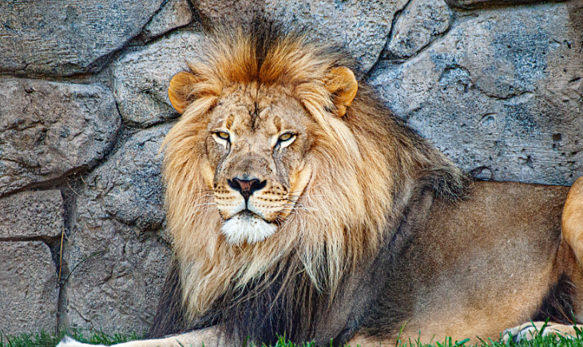
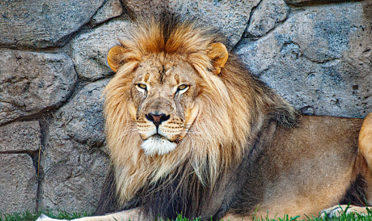

ライオン

ライオンは、食肉目ネコ科ヒョウ属に分類される食肉類。別名はシシ（獅子）。オスであれば体重は250キログラムを超えることもあり、ネコ科ではトラに次いで2番目に大きな種である。現在の主な生息地はサブサハラであるが、インドのジル国立公園のインドライオンは絶滅が危惧されている。北アフリカや西南アジアでは有史時代に姿を消している。更新世末期、約1万年前までライオンはヒトに次いで広く分布する大型陸上哺乳類だった。

ライオンは、食肉目ネコ科ヒョウ属に分類される食肉類。別名はシシ（獅子）。オスであれば体重は250キログラムを超えることもあり、ネコ科ではトラに次いで2番目に大きな種である。現在の主な生息地はサブサハラであるが、インドのジル国立公園のインドライオンは絶滅が危惧されている。北アフリカや西南アジアでは有史時代に姿を消している。更新世末期、約1万年前までライオンはヒトに次いで広く分布する大型陸上哺乳類だった。